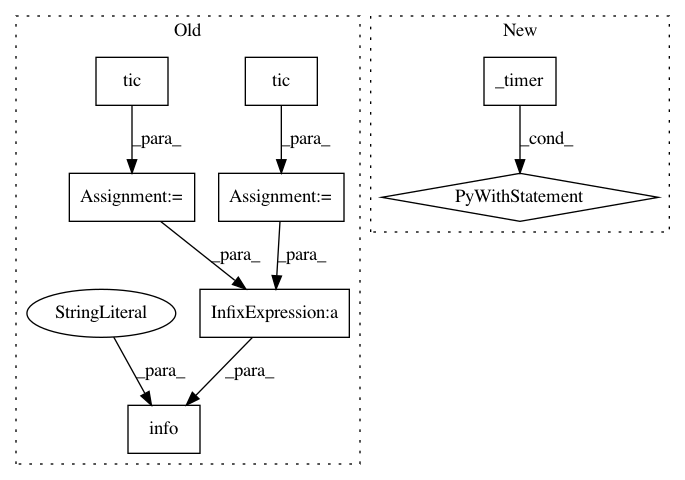

d95f1cea505a062c4896d36276aba1f31f50c446,benchmarks/k_means_kdd.py,,fit,#Any#Any#,107
Before Change
oversampling_factor=oversampling_factor,
random_state=0,
)
t0 = tic()
logger.info(
"Starting n_clusters=%2d, oversampling_factor=%2d",
n_clusters,
oversampling_factor,
)
km.fit(data)
t1 = tic()
logger.info("Finished in %.2f", t1 - t0)
def main(args=None):
args = parse_args(args)
After Change
n_clusters,
oversampling_factor,
)
with _timer("km.fit", _logger=logger):
km.fit(data)
def main(args=None):
args = parse_args(args)
logger.info("Checking local data")
local = split(download())
In pattern: SUPERPATTERN
Frequency: 3
Non-data size: 8
Instances
Project Name: dask/dask-ml
Commit Name: d95f1cea505a062c4896d36276aba1f31f50c446
Time: 2018-07-25
Author: gglanzani@users.noreply.github.com
File Name: benchmarks/k_means_kdd.py
Class Name:
Method Name: fit
Project Name: dask/dask-ml
Commit Name: d95f1cea505a062c4896d36276aba1f31f50c446
Time: 2018-07-25
Author: gglanzani@users.noreply.github.com
File Name: dask_ml/wrappers.py
Class Name: ParallelPostFit
Method Name: fit
Project Name: dask/dask-ml
Commit Name: d95f1cea505a062c4896d36276aba1f31f50c446
Time: 2018-07-25
Author: gglanzani@users.noreply.github.com
File Name: dask_ml/cluster/k_means.py
Class Name:
Method Name: init_scalable